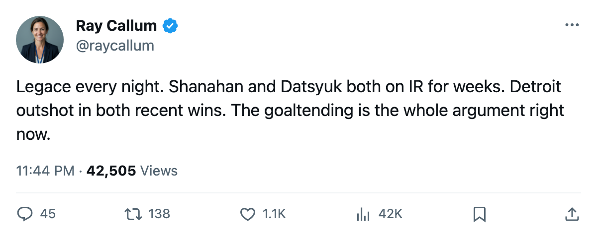

DET
DETGoalie Watch: Legace Has Started All 8 for Detroit, and the Top Six Keeps Shrinking
Manny Legace is one of 2 goaltenders with a full workload through 8 starts. The Red Wings lost Shanahan and Datsyuk in the same week and are still winning.
 Ray CallumSenior correspondent · Home Ice Network
Ray CallumSenior correspondent · Home Ice Network
 Manny Legace84 and Vancouver's
Manny Legace84 and Vancouver's  Dan Cloutier90 are the only goaltenders to have taken every start through 8 games this season. Legace's record is 5-2-1, with 21 goals for and 19 against.
Dan Cloutier90 are the only goaltenders to have taken every start through 8 games this season. Legace's record is 5-2-1, with 21 goals for and 19 against.
Detroit lost  Brendan Shanahan80 to a back designation sometime between October 22 and October 24, return targeted for November 29.
Brendan Shanahan80 to a back designation sometime between October 22 and October 24, return targeted for November 29.  Pavel Datsyuk70's hip designation came between October 20 and October 22, return targeted for November 17.
Pavel Datsyuk70's hip designation came between October 20 and October 22, return targeted for November 17.
 Ray Whitney75 moved from right wing on the second line to center it. Samu Uhlback70, not dressed before, now centers the top line.
Ray Whitney75 moved from right wing on the second line to center it. Samu Uhlback70, not dressed before, now centers the top line.  Jason Dawe61, also newly dressed, took a spot on the third line.
Jason Dawe61, also newly dressed, took a spot on the third line.  Kirk Maltby75 moved up to the first line left wing.
Kirk Maltby75 moved up to the first line left wing.  Henrik Zetterberg70 dropped from the fourth line's half slot to a pure third-line wing.
Henrik Zetterberg70 dropped from the fourth line's half slot to a pure third-line wing.
Detroit has won 2 straight: a 2-1 win over Los Angeles on October 23, then a 3-2 win over Pittsburgh on October 25. In both games, Detroit was outshot.
The Red Wings sit 2nd in the West at 5-2-1. They play St. Louis at home on October 29, the team that beat them 2-1 earlier this season. The Blues have lost 2 in a row after consecutive overtime wins.
With Shanahan out until late November and Datsyuk nearly a month, Detroit is asking Legace to hold the crease and asking depth forwards to fill gaps they did not plan for in October.
